2026.10.13 (Мя) – 10.19 (Да) · 8 эмэгтэй · буудал Күчүк Аясофья, Фатих · буцах TK236 Да 18:30
Истанбул 8 хүний аялал
Зургаан бүтэн өдөр, долоо дахь өдөр нь өглөө. Өдөр бүр хаана, хэдэн цагт, ямар трам, автобус, гатлага онгоцоор, аль хөлгөөс яаж явахыг алхам алхмаар бичсэн. Цагийг бодит ажиллах цаг, мөргөлийн цаг, гатлага онгоцны 2026 оны өвлийн хуваарь дээр тулгуурлав. Зардал олон улсын жуулчдын дундаж буюу "тав тухтай" түвшин (өдөрт 100–130 €).
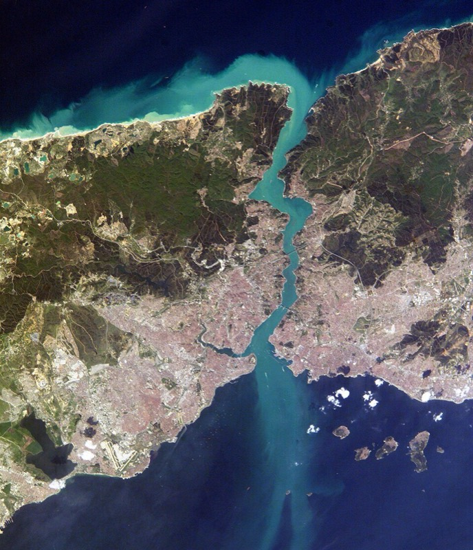
Босфор, Галатагийн гүүр, хуучин хот. Та нарын буудал зургийн зүүн доод хэсэг, Султанахметын ард.
Буудал
Султанахмет трам 10 мин, Ая София 11 мин алхана
Буцах нислэг
Да 10.19 · 18:30
TK236, IST → UB 07:20+1; буудлаас 13:00 гарна
Ханш (10.13)
1 ₺ ≈ 73 ₮
1 € ≈ 57 ₺ ≈ 4,200 ₮
Хүний нийт
≈ 38,500 ₺
≈ 675 € ≈ 2.8 сая ₮ (байргүй)
Цаг агаар: эхний 3 өдөр бороо, амралтын өдрүүд сайжирна
Open-Meteo-гийн 10.13-ны өглөөний прогноз. Лхагва, Пүрэв гарагт хүчтэй бороо, 33–35 км/ц салхитай тул тэр хоёр өдрийг ордон, музей, зах, хамамд өнгөрөөнө. Ням 18 задгай хөтөлбөрт тохирох хамгийн сайн бүтэн өдөр тул Ханхүүгийн арлуудыг тэр өдөр тавьсан.
Мя 13
19° / 16°
бороо 95% · 3 мм
салхи 18 км/ц
Лх 14
18° / 16°
бороо 100% · 27 мм
салхи 33 км/ц
Пү 15
17° / 15°
бороо 97% · 26 мм
салхи 35 км/ц
Ба 16
15° / 13°
бороо 49% · 2 мм
салхи 19 км/ц
Бя 17
14° / 12°
бороо 78% · 15 мм
салхи 14 км/ц
Ня 18
17° / 12°
бороо 42% · 2 мм
салхи 21 км/ц
Да 19
19° / 16°
бороо 31% · 0 мм
нислэг 18:30
Нар мандах 07:13 → 07:21, жаргах 18:27 → 18:16. Юу авч явах: шүхэр (Их захаас 150–300 ₺), ус нэвтрүүлдэггүй гутал, салхины куртка, сүмд зориулсан алчуур. Өдөр 15–19°, орой 12–16°. Прогнозыг өглөө бүр дахин шалгаарай: yr.no Истанбул.
Тээвэр: яаж явах вэ, алхам алхмаар
Шийдвэр
Машин түрээслэхгүй. Буудал Султанахметын трамын буудлаас 10 минут, Эминөнүгийн гатлага онгоцны хөлгүүдээс трамаар 10 минут. Истанбулын түгжрэл, зогсоол, мөн Монголын кирилл үнэмлэхэд олон улсын үнэмлэх (IDP) заавал. Бүх өдөр трам + гатлага онгоц + алхалт, орой нэг, хоёр удаа такси, нисэх буудал руу урьдчилан захиалсан ван.
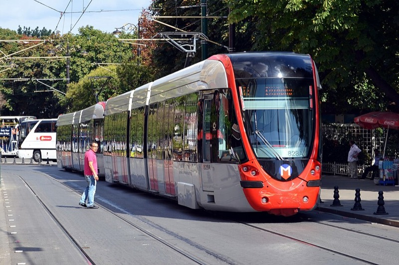
T1 трам: Султанахмет – Эминөнү – Каракөй – Кабаташ
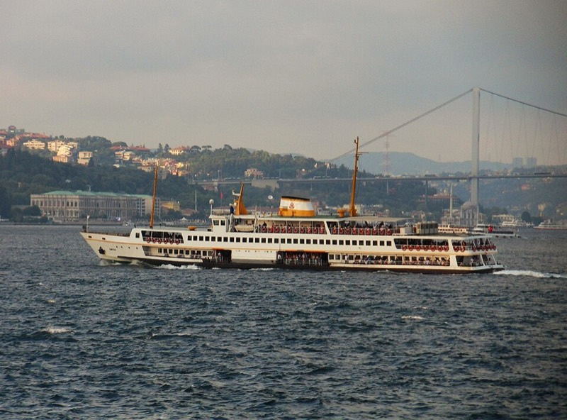
Şehir Hatları хотын гатлага онгоц, Истанбулкартаар
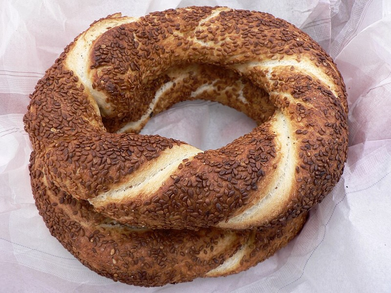
Онгоцон дээр цай 25 ₺ + симит 25 ₺
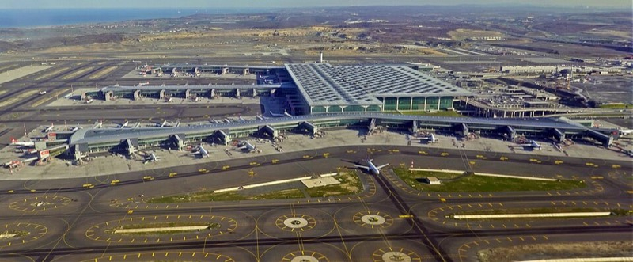
IST нисэх буудал, хотоос 45 км, ван 60–75 мин
1. Истанбулкарт: 3 картаар 8 хүн яаж явах
- Трам, метро, автобус, гатлага онгоц бүгд нэг карт. Нэг картыг хаалган дээр дараалан хэд хэдэн удаа уншуулж болно (хүн бүрт нэг удаа): 3+3+2 гэж орно. Нэг уншилт 46.20 ₺, 2 цагийн дотор шилжилт 34.40 ₺ (зөвхөн эхний хүнд тооцогдоно гэж бод).
- Цэнэглэх: трамын буудал, хөлөг бүрийн шар "Biletmatik" машин, дэвсгэрт (хариулт өгдөггүй, картын үлдэгдэл болно) эсвэл банкны карт. Картанд өдөрт 3 хүний 400–500 ₺ хийвэл хангалттай.
- Гатлага онгоцонд хаалгаар картаа уншуулаад л сууна; хуваарь sehirhatlari.istanbul эсвэл Google Maps "Transit".
- Шилжилтийн дүрэм: трам → гатлага онгоц 2 цаг дотор бол хямдарна. Турyol, Dentur (хувийн) завь зарим нь Истанбулкарт авна, зарим нь бэлэн/карт.
2. T1 трам: буудлаас хамгийн ойрын буудал "Sultanahmet"
Буудлаас гарч Küçük Ayasofya Caddesi-ээр өгсөж (Хөх сүм рүү) Хипподромын талбай, трамын буудал Divan Yolu гудамжин дээр: 10 мин. Трам 3–6 мин тутамд, 06:00–24:00. Хоёр чиглэл:
→ Kabataş чиглэл (хойд, Босфор руу)
Sultanahmet → Gülhane (Топкапы, Археологи, 1) → Sirkeci (Hodjapasha дервиш, 2) → Eminönü (бүх гатлага онгоц, Амтлагчийн зах, 3; 8 мин) → Karaköy (Галата, Güllüoğlu, Neolokal, 4; 12 мин) → Tophane → Fındıklı → Kabataş (Долмабахче, Таксим фуникулер, 7; 22 мин)
→ Bağcılar чиглэл (баруун, хотын гүн рүү)
Sultanahmet → Çemberlitaş (Чемберлиташ хамам, 1) → Beyazıt-Kapalıçarşı (Их зах, Сүлеймание, 2; 5 мин) → Laleli → Aksaray (Havaist нисэх буудлын автобус, 4; 12 мин)
3. Эминөнү: гатлага онгоцны хөлгүүд (трамаас буугаад 2 мин)
Трамаас бууж замыг гүүрний доогуур гарч усан талд очно. Хөлгүүд зүүнээс баруун тийш (Галатагийн гүүрнээс холдох дарааллаар): Haliç (Алтан эврийн шугам: Фенер, Балат, Эюп) · Turyol / Dentur хувийн завь (Галатагийн гүүрний яг хажууд: Арлууд, Босфорын 90 минутын тойрог) · Üsküdar · Kadıköy · Boğaz Hattı (Şehir Hatları Босфорын тойрог). Хөлөг бүрийн хаалган дээр чиглэлийн нэр том бичээстэй, хуваарийн самбартай.
4. Такси ба ван
- Шар такси, "TAKSİ" гэрэлтэй. BiTaksi апп (карт холбож) хамгийн найдвартай; гудамжнаас авбал "taksimetre" гэж хэлж тоолуур асаалгана. Эхлэл ~35 ₺ + 23.6 ₺/км, доод 100 ₺. 8 хүн = 2 такси (4+4). Таксим/Каракөй – Султанахмет ≈ 250–350 ₺ нэг машин.
- Нисэх буудал руу 8 хүний ван: буудал эсвэл welcomepickups.com / kiwitaxi-аар урьдчилан, ≈ 3,500 ₺, 60–75 мин. Yusuf Aşkın Sokak нарийн тул ван Küçük Ayasofya Caddesi дээр хүлээнэ.
- Нийтийн тээврээр нисэх буудал: Sultanahmet трам → Aksaray (Bağcılar чиглэл, 4 буудал) → Havaist HVL-1 автобус (Aksaray Havaist буудал, 20–30 мин тутам, 265–355 ₺, Истанбулкарт/банкны карт, бэлэн мөнгө авахгүй), 70–90 мин.
Ажиллах цаг, мөргөлийн цаг, тасалбар
Сүмүүд (Ая София, Хөх сүм, Сүлеймание, Рүстем Паша) мөргөлийн цагаас 30 мин өмнө, 30 мин дараа жуулчин оруулдаггүй. Диянетийн 2026.10 сарын Истанбулын цаг:
| Өдөр | Өглөө (Güneş) | Үд (Öğle) | Үдээс хойш (İkindi) | Орой (Akşam) | Шөнө (Yatsı) | Жуулчны цонх |
|---|
| Лх 14 | 07:07 | 12:55 | 16:01 | 18:33 | 19:52 | 09:00–12:20, 13:30–15:30, 16:40–18:00 |
| Пү 15 | 07:08 | 12:55 | 16:00 | 18:32 | 19:51 | адил |
| Ба 16 | 07:09 | 12:55 (Баасны мөргөл) | 15:58 | 18:30 | 19:49 | Ая София, Хөх сүм 12:00–14:30 хаалттай; Хора Баасан бүхэлдээ хаалттай |
| Бя 17 | 07:10 | 12:55 | 15:57 | 18:29 | 19:48 | адил |
| Ня 18 | 07:11 | 12:54 | 15:56 | 18:27 | 19:47 | адил |
| Да 19 | 07:13 | 12:54 | 15:55 | 18:26 | 19:45 | адил |
| Газар | Ажиллах цаг (10 сар) | Хаалттай | ₺ | ₮ | Манай өдөр |
|---|
| Ая София, дээд галерейн жуулчны зам | 09:00–19:30 орчим, сүүлийн тасалбар 1 цагийн өмнө; мөргөлөөр завсарлана | Ба 12:00–14:30 | 1,270 | 93,000 | Лх 14, 09:00 |
| Хөх сүм | 08:30–18:00, мөргөлөөр завсарлана | Ба 12:00–14:30 | 0 | 0 | Лх 14, 10:30 |
| Цөөрөм (Basilica Cistern) | 09:00–19:00 (сүүлийн тасалбар 18:00); 19:30–22:00 "шөнийн" 3,000 ₺ | — | 1,950 | 142,000 | Лх 14, 11:30 |
| Топкапы + Харем + Ая Ирине | 09:00–18:00, сүүлийн тасалбар 17:00, Харем 45 мин эрт хаана | Мягмар | 2,750 | 200,000 | Пү 15, 09:00 |
| Археологийн музей | 09:00–18:00, тасалбар 17:30 хүртэл; Паалантай павильон засварт | Даваа | 760 | 55,000 | Пү 15, 14:30 |
| Галата цамхаг | 08:30–23:00 (сүүлийн орох 22:00) | — | 1,520 | 111,000 | Пү 15, 17:15 |
| Hodjapasha дервишийн сема | Өдөр бүр 19:00, хаалга 18:30, 60 мин | — | ≈ 1,400–1,800 | 100–130 мян. | Пү 15, 19:00 |
| Босфорын богино тойрог, Şehir Hatları | Эминөнү Boğaz Hattı хөлгөөс 14:30 (хөлөг дээр шалга), 2 цаг | — | 340 | 25,000 | Ба 16, 14:30 |
| Долмабахче ордон (Selamlık + Harem) | 09:00–17:00, тасалбар 16:00 хүртэл, ихэвчлэн эрт дуусдаг | Даваа | 2,000–2,650 | 146–193 мян. | Бя 17, 13:45 |
| Cağaloğlu Hamamı, эмэгтэйчүүдийн хэсэг | 08:00–22:00 (захиалга заавал) | — | 2,000–4,500 | 146–330 мян. | Лх 14, 18:00 |
| Их зах | 08:30–19:00 | Ням | 0 | 0 | Лх 14, Да 19 |
| Амтлагчийн зах | 08:00–19:30, Ням 09:30–19:00 | — | 0 | 0 | Лх 14, Да 19 |
| Хора (Kariye) сүм, мозайк | 09:00–18:00, мөргөлөөр завсарлана | Баасан | ≈ 1,150 (20 €) | 84,000 | хувилбар, Пү 15 |
| Арлуудын гатлага, Turyol Эминөнү → Бүйүкада | 08:40, 09:40, 10:40, 11:40 …; буцах 14:15, 15:15, 16:15, 17:00, 18:00 | — | ≈ 150–200 | 11–15 мян. | Ня 18, 09:40 |
Museum Pass (105 €) Ая София галерей, Цөөрөм, Долмабахчег багтаадаггүй тул тасалбарыг хаалган дээрээс (эсвэл muze.gov.tr) авна. Онлайн "skip-the-line" борлуулагчид 2–3 дахин үнэтэй. Цагууд 2026 оны аравдугаар сарын байдлаар, гарахын өмнө Google Maps дээр нэг удаа шалга.
Өдөр бүрийн хөтөлбөр
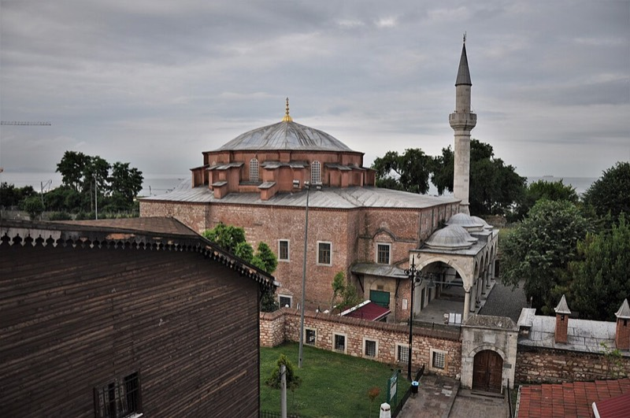
Күчүк Аясофья сүм (6-р зуун), буудлаас 2 минут
Мягмар 10.13 · Уулзалт, хөршийн орой
бороо 95%19°/16°, нар жаргах 18:27
13:50
6 хүн IST буудалд буух. Паспорт, ачаа 60 мин.
Зам: нисэх буудал → буудал (≈ 2 ц 15 мин, 95–110 ₺ хүнд)- Ирэх танхимаас гарч -2 давхар, "Havaist" заалтаар бусын буудал. HVL-1 Aksaray автобус, 20–30 мин тутам. Төлбөр Истанбулкарт эсвэл банкны карт (бэлэн мөнгө авахгүй). Картгүй бол нисэх буудлын метроны үүдэнд Истанбулкарт машин бий. 70–90 мин
- Aksaray буугаад замын нөгөө тал, T1 трам "Aksaray" буудал, Kabataş чиглэл. 4 буудал: Laleli → Beyazıt → Çemberlitaş → Sultanahmet. 12 мин
- Sultanahmet-ээс Хөх сүмийн баруун талаар Küçük Ayasofya Cd. уруу, Yusuf Aşkın Sk. 10 мин
Хувилбар: 8 суудлын ван урьдчилан захиалсан бол ≈ 3,500 ₺ (хүнд 580 ₺), 60–75 мин, хаалган дээр буулгана.
17:00
Бүх 8 хүн буудалд. Бүртгэл, амралт. Хажуугийн
Күчүк Аясофья сүм 📍 (Сергий ба Бахусын сүм, 527 он, Ая Софиягийн "жижиг загвар", үнэгүй, 2 мин) ба
Араста зах 📍 (Хөх сүмийн ард, гар урлал, 4 мин) борооны завсраар. Мөргөлийн цаг 18:33, түүнээс өмнө.
18:00
Валют: Хипподром орчмын döviz цэг хэд хэд, ханш муугүй (Их захын дотор хамгийн сайн). Картаар ихэнх газар, зах, кафе, такси бэлэн мөнгө илүүд үздэг. 3 Истанбулкартаа Sultanahmet трамын буудлын машинаас 400–500 ₺-өөр цэнэглэ.
19:30
Тавтай морил оройн хоол:
Balıkçı Sabahattin 📍 (1927 он, Seyit Hasan Kuyu Sk. 1, Жанкуртаран; буудлаас зүүн тийш Küçük Ayasofya Cd. → Kennedy Cd. дагуу
8 мин алхана; Султанахметын хамгийн сайн загасны ресторан, meze + шарсан загас, 8 хүнд захиалга), хүнд 1,200–1,600 ₺. Хямд хувилбар: Кумкапы (5 мин, хөгжимтэй, үнээ эхлээд асуу) эсвэл Сиркежи Hocapaşa Sokak (400 ₺).
≈ 1,400 ₺Өдрийн зардал ≈ 1,600 ₺
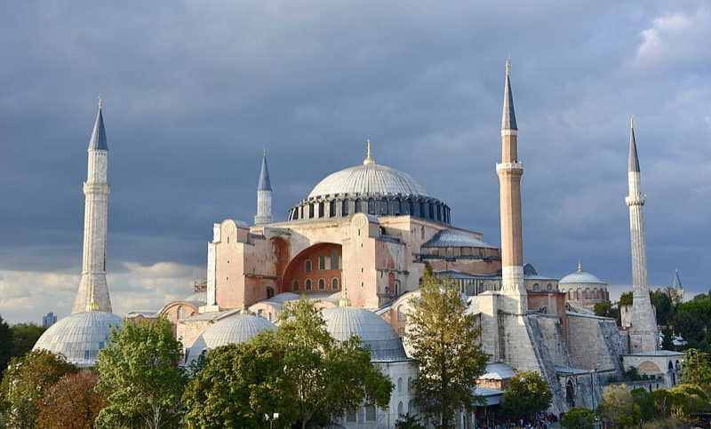
Ая София (537 он). Бөмбөгөр 2025 оноос засварт, дотор нь шат байна
Лхагва 10.14 · Султанахмет, захууд, хамам
хүчтэй бороо 27 мм, салхи 3318°/16°, бүх зүйл буудлаас алхах зайд
08:00
Өглөөний цай буудалд. 08:45 гарна: Küçük Ayasofya Cd. өгсөж Хөх сүмийн хажуугаар Султанахметын талбай, Ая Софиягийн жуулчны (галерейн) хаалга сүмийн баруун хойд талд 11 мин.
09:00
Ая София 📍 нээлтэд (1,270 ₺). Дээд галерейн зам: Дэисисын мозайк, эзэн хааны лож, Комненосын мозайк. Мөр, өвдөг халхалсан, алчуур. 75 мин. Доод давхарт мөргөлчдийн хаалгаар (үнэгүй) ороод дээшээ харж болно, тасалбаргүй.
10:30
Талбай гатлаад
Хөх сүм 📍 (үнэгүй, жуулчны хаалга хойд талын хашаанаас; 20,000 Изникийн паалан). 12:20-д мөргөлд хаана тул 11:15 хүртэл. Дараа нь
Хипподром 📍: Египетийн обелиск, Могой багана, Германы усан сан. 5 мин алхалт.
11:30
Цөөрөм 📍 (Yerebatan Cd., Ая Софиягаас 3 мин; 1,950 ₺): 336 багана, Медузын толгой, гэрлийн инсталляц. Борооны өдрийн хамгийн сайн газар, 45 мин.
14:00
Их зах 📍 (08:30–19:00).
Зам- Sultanahmet трам, Bağcılar чиглэл, 2 буудал → Beyazıt-Kapalıçarşı. 5 мин
- Буугаад ар тал руу 2 мин, захын Nuruosmaniye эсвэл Beyazıt хаалга.
60 гудамж, 4,000 дэлгүүр, бүгд дээвэр дор. Эхний үнийн 50–60%-д тохирох нь энгийн. Үнэт эдлэл (İç Bedesten), кашемир, керамик, арьсан бүтээгдэхүүн, ламп.
Şark Kahvesi 📍-д турк кофе 100 ₺. 90 мин.
15:45
Амтлагчийн зах + Рүстем Паша сүм 📍.
Зам- Захын Mahmutpaşa хаалгаар гарч Mahmutpaşa Yokuşu уруудан (хямд хувцасны гудамж) Амтлагчийн зах хүртэл 12 мин, эсвэл трам Beyazıt → Eminönü (Kabataş чиглэл, 5 буудал, 15 мин).
- Амтлагчийн захын ар талаас Hasırcılar Cd.-гийн дэлгүүрүүдийн дундуур нарийн шатаар Рүстем Паша сүм 📍 (Синан, 1563; Изникийн паалангийн шилдэг, үнэгүй; 16:40-өөс нээлттэй).
Lokum, цай, саван, халуун ногоо, хатаасан жимс. 60 мин.
17:30
Эминөнү трам → Sultanahmet (3 буудал) → Cağaloğlu-руу алхах, эсвэл Эминөнүгөөс такси 2 машин (120 ₺). Хамам Ая Софиягийн баруун хойд, Prof. Kazım İsmail Gürkan Cd. 24, Sultanahmet буудлаас 7 мин.
18:00
Cağaloğlu Hamamı 📍 (1741 он, Османы сүүлчийн том хамам): эмэгтэйчүүдийн тусдаа хэсэг, эмэгтэй үйлчлэгч. Самнуур + хөөсний масаж багц 2,000–4,500 ₺, 90 мин, 8 хүнд захиалга заавал (cagalogluhamami.com.tr, WhatsApp). Peştemal, шаахай өгдөг; бикини доод хэсэг авч яв. Хувилбар:
Ayasofya Hürrem Sultan 📍 (1556, Синан, 100 €-аас дээш).
20:15
Оройн хоол хамамаас 5 мин:
Matbah 📍 (Османы ордны жор, Ottoman Hotel Imperial, Caferiye Sk. 6/1, 1,000 ₺, захиалга). Буудал руу 13 мин алхана, эсвэл 2 такси 200 ₺.
≈ 1,000 ₺Өдрийн зардал ≈ 8,100 ₺ (тасалбар 3,220 + хамам 3,500 + хоол 1,350 + тээвэр)
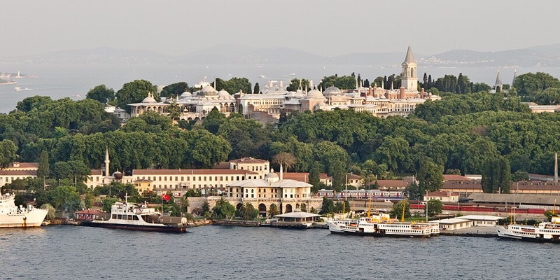
Топкапы ордон, 1465–1856 оны султануудын өргөө
Пүрэв 10.15 · Топкапы, Галата, дервиш
бороо 26 мм, салхи 3517°/15°
08:40
Гарна. Ая Софиягийн ард Bab-ı Hümayun (Эзэн хааны хаалга) → Ая Ирине сүмийн хажуугаар тасалбарын касс (эхний хашаа). Буудлаас 15 мин. Нээлтэд оочир 10 мин, 10:30-аас 60 мин болдог.
09:00
Топкапы ордон + Харем + Ая Ирине 📍 (2,750 ₺). Дараалал: эхлээд
Харем (хоёрдугаар хашаанаас, оочир багатай), дараа нь 3-р хашаа: Эрдэнэсийн сан (Топкапы чинжаал, 86 каратын Халбагачны алмаз), Ариун дурсгалын өрөө, 4-р хашаа: Багдад, Реван павильон, Босфор харсан дэнж. Хашаа задгай тул шүхэр. 3.5 цаг.
12:45
Үдийн хоол ордны 4-р хашааны
Konyalı 📍 (1897 он, Босфор харсан дэнж, 600 ₺; захиалгагүй, 13:00-д дүүрдэг тул 12:45).
14:00
Археологийн музей 📍 (760 ₺): ордны 1-р хашаанаас Гүлхане тал руу уруудах замаар 5 мин. Александрын саркофаг, Гашуудагч эмэгтэйчүүдийн саркофаг, Кадешийн гэрээ. 90 мин, бүгд дотор.
Хувилбар: мозайк сонирхогчид музейн оронд Хора (Kariye) 📍 сүм рүү таксигаар (Gülhane-ээс 20 мин, 250 ₺ машин; 20 €): 14-р зууны Византийн шилдэг мозайк, фреск; маргааш Баасан хаалттай тул ганц боломж энэ. 15:45
Каракөй руу.
Зам- Музейгээс Гүлхане цэцэрлэгээр уруудан Gülhane трамын буудал (5 мин), Kabataş чиглэл, 3 буудал → Karaköy. 10 мин
- Буугаад гүүрний эсрэг тал, Rıhtım Cd. дагуу 2 мин → Karaköy Güllüoğlu 📍 (Mumhane Cd. 171).
Karaköy Güllüoğlu (1949 оноос, kaymak-тай fıstıklı баклава 2 ширхэг + цай 250 ₺). 30 мин.
16:45
Галата цамхаг 📍 (1,520 ₺): Güllüoğlu-гаас Галата гүүрний зүүн тал, Yüksek Kaldırım шатлаг гудамжаар өгсөнө,
12 мин, эгц (хүсвэл такси 100 ₺ эсвэл Tünel фуникулер Karaköy → Tünel 90 сек, 46 ₺, дараа нь 5 мин уруудна). 1348 он, лифттэй, 360° панорам, 45 мин. Galip Dede Cd.-гийн дэлгүүрүүд.
18:15
Сиркежи рүү буцна.
Зам- Цамхагаас Yüksek Kaldırım-аар уруудаж Karaköy трам (10 мин), Bağcılar чиглэл, 2 буудал → Sirkeci. 8 мин
- Буугаад Ankara Cd. гатлаж Hocapaşa Hamamı Sk. 3 мин → Hodjapasha 📍. 18:30-д хаалга.
19:00
Эргэлдэгч дервишийн сема 📍, Hodjapasha соёлын төв (15-р зууны хамам, 60 мин, зураг хориотой, захиалга заавал: hodjapasha.com) ≈ 1,400–1,800 ₺.
20:20
Оройн хоол
Hamdi Restaurant 📍 (Tahmis Cd. 17, Эминөнү, Амтлагчийн захын хажууд; Hodjapasha-аас Ankara Cd. уруудан
7 мин; Алтан эвэр харсан дээврийн давхар, Урфагийн кебаб, 1980 оноос, захиалга), 900–1,200 ₺. Буцахдаа Eminönü трам → Sultanahmet (Bağcılar чиглэл, 3 буудал) + 10 мин алхалт, эсвэл 2 такси 150 ₺.
≈ 1,000 ₺Өдрийн зардал ≈ 8,500 ₺ (тасалбар 5,030 + дервиш 1,600 + хоол 1,850)
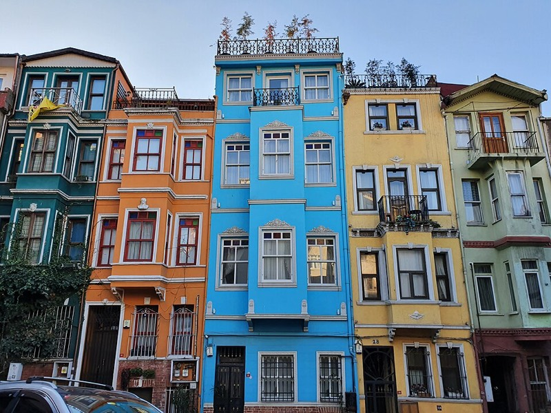
Балат, Kiremit Caddesi-гийн өнгөт байшингууд
Баасан 10.16 · Балат, Фенер, Босфорын круиз, Сүлеймание
бороо 49%, бага15°/13°, Баасны мөргөл 12:55
09:00
Балат руу.
Зам (≈ 40 мин)- Sultanahmet трам, Kabataş чиглэл, 3 буудал → Eminönü. 8 мин
- Буугаад Амтлагчийн захын ард, Yeni Cami-гийн хажуугийн Eminönü автобусны буудал (IETT). 99, 99A эсвэл 36CE автобус (Алтан эврийн эрэг дагуу), "Balat" буудалд буух, 8 буудал. 15–20 мин
- Хувилбар: Haliç гатлага онгоц Эминөнүгийн баруун захын Haliç хөлгөөс (цагт 1, 58 ₺), Fener хөлөгт буух, 20 мин, илүү сайхан харагдац.
09:45
Балат, Фенер 📍 алхалт: Vodina Cd. →
Kiremit Cd. (өнгөт байшин) →
Merdivenli Yokuş шат → Грекийн улаан сургууль (Fener Rum Lisesi) → Экуменик патриархын сүм (Св. Георгий, үнэгүй) → Болгарын төмөр сүм (Св. Стефан, эргийн зам). Антик, хуучин хувцасны дэлгүүр. Өглөөний кофе,
Forno Balat 📍 (Fener Kireçhane Sk. 13, 250 ₺) эсвэл Cooklife. 2.5 цаг.
12:15
Эминөнүд буцна: Балат буудлаас 99/99A/36CE "Eminönü" чиглэл (15–20 мин) эсвэл Fener хөлгөөс Haliç онгоц. Үдийн хоол
Pandeli 📍 (1901 он, Амтлагчийн захын Эминөнү хаалганы дээд давхар, цэнхэр паалан, 700 ₺) эсвэл гүүрний доорх
balık ekmek завь (загасны сэндвич 150–200 ₺, Эминөнүгийн сонгодог).
14:00
Boğaz Hattı хөлөгт (Эминөнүгийн хөлгүүдийн хамгийн зүүн зах, Кадыкөйн хөлгийн цаана; Амтлагчийн захаас 7 мин алхана). Тасалбар хөлгийн кассаас, 340 ₺, захиалгагүй.
14:30
Şehir Hatları
Босфорын богино тойрог 📍 (2 цаг, зогсолтгүй, Истинье хүртэл буцна): Долмабахче, Ортакөй сүм, 15 Июлийн гүүр, Бейлербей ордон, Арнавуткөй, Бебек, Румели Хисары цайз, Фатих Султан Мехмедийн гүүр. Дээд давхрын баруун талд (Европ тал) сууж явж, буцахдаа нөгөө тал. Бороотой бол доод давхар дулаан, цонхтой.
Хэрэв тэр өдөр Şehir Hatları явахгүй бол (өвөл заримдаа): Галатагийн гүүрний хажуугийн Turyol / Dentur Avrasya 90 минутын тойрог, цаг бүр, 300–400 ₺.16:45
Сүлеймание сүм 📍.
Зам- Эминөнүгөөс Hasırcılar → Uzunçarşı → Siyavuşpaşa Sk.-ээр өгсөнө, 15 мин, эгц; эсвэл 2 такси 120 ₺.
- Сүм дотор 16:45–17:45 (İkindi 15:58 дууссан, Akşam 18:30-ын 30 мин өмнө хаана).
Синаны шилдэг бүтээл (1557), үнэгүй, Сүлейман, Хүррэмийн бунхан. Дэнжээс нар жаргах
18:16: Галата, Босфорын панорам.
Mimar Sinan Teras Cafe 📍 цай, эсвэл
Erzincanlı Ali Baba 📍-д kuru fasulye (цагаан буурцагны шөл, 200 ₺).
18:45
Каракөй руу: сүмээс Vefa уруудаж Eminönü трам (15 мин) → Kabataş чиглэл 1 буудал → Karaköy, эсвэл 2 такси 150 ₺. Ресторан Kemankeş Cd. 37A, трамаас 5 мин.
19:30
Оройн хоол
Karaköy Lokantası 📍 (Michelin Bib Gourmand, орой meyhane: meze + загас + раки, захиалга заавал) 900–1,300 ₺. Буцахдаа Karaköy трам → Sultanahmet (Bağcılar чиглэл, 4 буудал, 12 мин), сүүлийн трам 00:00 орчим.
≈ 1,100 ₺Өдрийн зардал ≈ 2,900 ₺ (круиз 340 + хоол 2,250 + тээвэр)
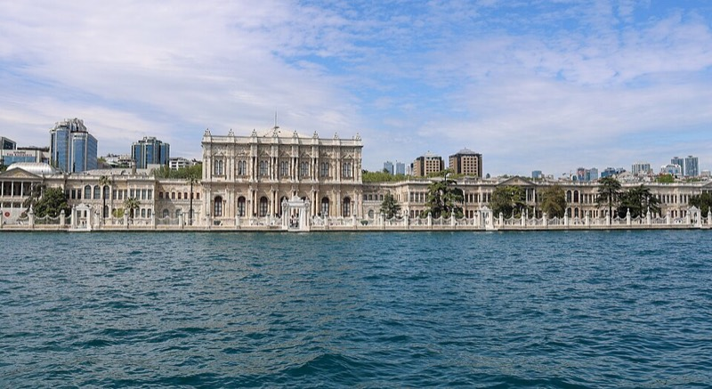
Долмабахче ордон (1856), Босфорын эргийн 285 өрөө
Бямба 10.17 · Кадыкөй, Долмабахче, Ортакөй, Neolokal
бороо 78%, 15 мм14°/12°, хамгийн хүйтэн өдөр
09:00
Кадыкөй руу гатлага онгоцоор.
Зам (≈ 45 мин)- Sultanahmet трам, Kabataş чиглэл, 3 буудал → Eminönü. 8 мин
- Гүүрний доогуур усан тал, "Kadıköy" бичээстэй хөлөг. Истанбулкартаа уншуулаад орно (59 ₺). Бямбын өглөө: 09:35, 09:55, 10:15. 20–25 мин
- Дээд давхрын гадна суудалд: Султанахмет, Топкапы, Галата, Хайдарпаша вокзал бүгд харагдана. Онгоцны цайны газраас цай 25 ₺, симит.
10:20
Кадыкөй 📍: хөлгөөс гарч замыг гатлан Муваккитхане гудамж →
Кадыкөйн зах (Çarşı): бяслаг, олив, халуун ногоо, загасны зах,
Yeldeğirmeni хананы зураг,
Bahariye Cd.-гийн дэлгүүрүүд (хотын хамгийн хямд, чанартай худалдаа), Moda-гийн кафе. 90 мин.
12:00
Үдийн хоол
Çiya Sofrası 📍 (1919 он, Güneşlibahçe Sk. 43, зах дотор; Анатолийн хуучин жор, 500–700 ₺; захиалга авдаггүй, 12:00-д очиход суудал бий), амттан
Baylan 📍 (1923 он, Muvakkithane Cd. 9, Kup Griye).
≈ 650 ₺13:10
Бешикташ руу гатлага онгоц.
Зам- Кадыкөйн хөлөг, "Beşiktaş" бичээстэй хаалга (Эминөнүгийн хөлгийн баруун талд), 30 мин тутам, 59 ₺. 20 мин
- Бешикташ хөлгөөс буугаад баруун тийш далайн эрэг дагуу Dolmabahçe Cd.-ээр ордны Saltanat (Treasury) хаалга хүртэл. 10 мин
13:45
Долмабахче ордон 📍 (2,000–2,650 ₺, тасалбар 16:00 хүртэл, ихэвчлэн эрт дуусдаг тул 14:00-аас өмнө касс): 285 өрөө, 4.5 тонн болор лаа, 14 тонн алтан гоёл, Ататюркийн 09:05-д зогссон цагтай өрөө. Selamlık + Harem, аудио гарын авлага, бүх зам дээвэр дор. 2 цаг.
16:00
Ортакөй руу.
Зам- Ордны хаалганаас Бешикташ хөлгийн урд Beşiktaş İskele автобусны буудал, 22, 25E, 40 эсвэл 40T автобус (Босфорын эрэг дагуу), "Ortaköy" буудал, 3 буудал. 10 мин
- Борооггүй бол Çırağan ордны хажуугаар эргийн замаар алхана. 25 мин
Худалдаа сонирхогчид оронд нь Бешикташаас такси 10 мин
Нишанташы 📍 (Abdi İpekçi Cd., Vakko, Beymen, турк дизайнерууд), 18:30-д Каракөйд нийлнэ.
16:30
Ортакөй 📍: 15 Июлийн гүүрний доорх Ортакөй сүм (1856, үнэгүй, 16:40-өөс нээлттэй), талбайн
kumpir (чихмэл төмс, 250–300 ₺, хөнгөн зууш), вафли, Босфорын эрэг. Нар жаргах 18:12, гүүрний гэрэл асна. 75 мин.
18:00
Каракөй руу.
Зам (≈ 35 мин)- Ortaköy буудлаас 22/25E/40 автобус "Kabataş" чиглэл, 5 буудал → Kabataş. 15 мин
- Kabataş трам, Bağcılar чиглэл, 3 буудал → Karaköy. 8 мин
- Галата гүүрний эсрэг талын Bankalar Cd. 11, SALT Galata барилга, 5 мин. Эсвэл Ортакөйгөөс 2 такси 20 мин, 250 ₺ машин.
19:30
Салах оройн хоол, Neolokal 📍 (Michelin од, Анатолийн орчин үеийн хоол, Алтан эвэр харсан; Мя–Бя 18:00-аас,
Ням, Да хаалттай тул Бямба). Таван хоолны меню ≈ 4,000 ₺, захиалга заавал (neolokal.com). Буцахдаа Karaköy трам → Sultanahmet (4 буудал).
≈ 4,000 ₺ Өдрийн зардал ≈ 7,800 ₺ (Долмабахче 2,650 + хоол 4,950 + тээвэр 250)
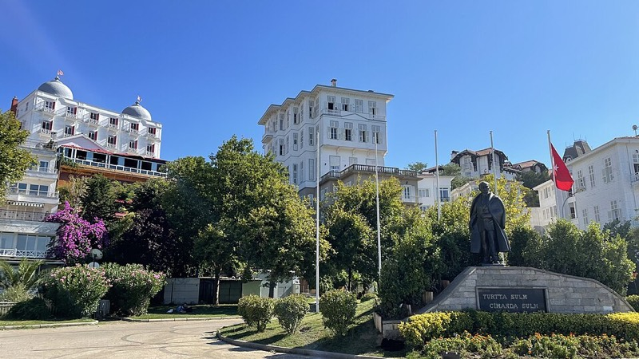
Бүйүкада, хөлгийн талбай. Арал дээр машин байхгүй, цахилгаан минибус
Ням 10.18 · Ханхүүгийн арлууд, салах meyhane
бороо 42%, бага17°/12°, Их зах хаалттай
08:40
Бүйүкада руу.
Зам (≈ 1 ц 50 мин)- Sultanahmet трам, Kabataş чиглэл, 3 буудал → Eminönü. 8 мин
- Галатагийн гүүрний яг хажуугийн Turyol хөлөг, "Adalar / Büyükada" бичээстэй. Тасалбар кассаас (≈ 150–200 ₺, Истанбулкарт эсвэл карт). 09:40 хөдөлнө (хоцорвол 10:40). Кынаъыада, Бургазада, Хейбелиадад зогсоно. 75 мин
- Дээд давхрын баруун талд: Султанахмет, Хайдарпаша, Кадыкөй харагдана. Онгоцон дээр цай, симит.
Хувилбар: Şehir Hatları Kabataş 09:05 (105 мин, 137 ₺), удаан тул Turyol дээр.
11:00
Бүйүкада 📍, дугуйгүй: хөлгийн талбайн зүүн талаас цахилгаан минибус
"Büyük Tur" (арлыг тойрох 50 мин, 100–150 ₺, хүссэн зогсоолд бууж дараагийнхаар сууна) эсвэл цахилгаан "fayton" тэрэг (6 хүн, ≈ 1,500 ₺ тэргэнд, хөлгийн талбайгаас). Çankaya Cd.-гийн Османы модон вилла, Лев Троцкийн байшин, нарс ой, Dilburnu-гийн харагдац. Хүч тэнхээтэй хүмүүс Lunapark-аас
Ая Йорги 📍 хийд рүү 20 минутын эгц өгсүүр (арлын хамгийн сайхан харагдац, дээр нь Yücetepe кафе), бусад нь Lunapark-ийн цайны газарт хүлээнэ.
13:30
Үдийн хоол эргийн
Milto 📍 эсвэл
Ali Baba 📍 загасны ресторан (хөлгөөс 3 мин, meze + загас, 800–1,000 ₺), арлын
dondurma мороженое, Büyükada Köşk-ийн антик кафе. Дэлгүүрүүд: арлын лаванда, хатаасан жимс.
≈ 900 ₺15:15
Буцах: Turyol Бүйүкада хөлгөөс 15:15 (дараагийнх 16:15, 17:00) → Эминөнү 16:30. 2 цаг буудалд амрах, хувцас солих, чемодан эхлүүлэх.
19:00
Истиклал руу.
Зам (≈ 30 мин)- Sultanahmet трам, Kabataş чиглэл, 4 буудал → Karaköy. 12 мин
- Трамаас 2 мин, Tünel 📍 фуникулер (1875 он, дэлхийн 2 дахь хуучин метро), 90 сек, Истанбулкарт 46 ₺ → Tünel талбай.
- Asmalımescit Sk. 16/D, 3 мин.
19:30
Салах meyhane, Asmalı Cavit 📍 (Истиклалын сонгодог meyhane, meze, шарсан загас, раки, 1,200–1,500 ₺, захиалга). Дараа нь Истиклал гудамжаар алхаж (хуучин улаан трам, Çiçek Pasajı) Таксим хүртэл 20 мин. Буцах: Taksim → F1 фуникулер → Kabataş → трам Sultanahmet (30 мин), эсвэл 2 такси ≈ 300 ₺ машин.
≈ 1,300 ₺ Өдрийн зардал ≈ 3,000 ₺ (онгоц 350 + минибус 150 + хоол 2,200 + тээвэр)
Бороо хүчтэй бол: арлын оронд Эминөнү → Üsküdar гатлага (15 мин, 58 ₺) → Кузгунжук (15 автобус 10 мин; модон байшин, кафе) → Чамлыжа сүм, толгой (үнэгүй панорам, 2 такси) → Үскүдарын Kanaat Lokantası (1933) → орой адил. Салах оройг ойрхон хийх бол: Кумкапы (буудлаас 5 мин, fasıl хөгжимтэй meyhane, 800–1,000 ₺).
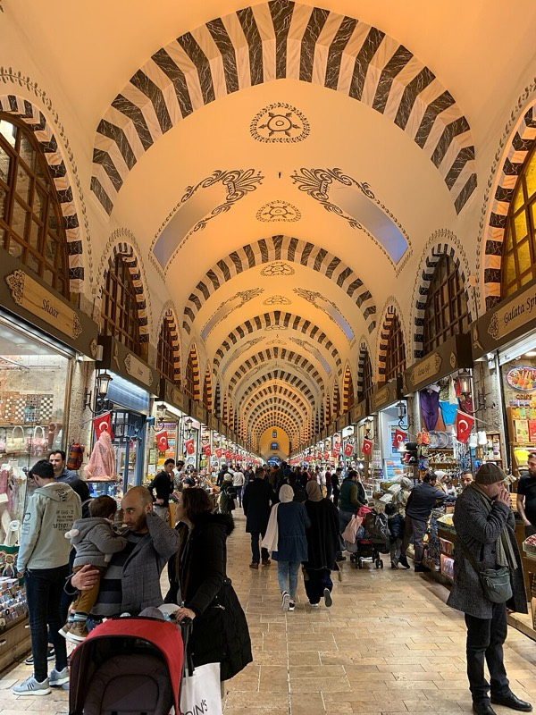
Амтлагчийн зах (1664): lokum, цай, халуун ногоо, Даваа 08:00-оос
Даваа 10.19 · Сүүлчийн худалдаа, нисэх буудал
бороо 0 мм19°/16°, TK236 18:30
08:00
Чемоданаа бэлдэж, буудалд 13:00 хүртэл ачаа хадгалуулах, эсвэл late checkout. Өглөөний цай Султанахмет
Hafız Mustafa 1864 📍 (Divan Yolu, цай, баклава, бэлгийн хайрцаг энд).
09:15
Сүүлчийн худалдаа: Араста зах (4 мин, Изникийн керамик, хивс, гар урлал) → Sultanahmet трам 3 буудал Амтлагчийн зах (lokum, цай, саван, зэс кофены сав, хатаасан жимс; өглөө хамгийн чөлөөтэй; Hasırcılar Cd.-д захаас 30% хямд) → хүсвэл Эминөнү → Beyazıt трам 5 буудал Их зах (Даваа нээлттэй). 1,200 ₺-ээс дээш худалдаанд "Tax Free" тэмдэгтэй дэлгүүрээс маягт авч нисэх буудал дээр гаалиар тамга даруулна (бүртгэлийн өмнө).
11:45
Буудалд буцна (Eminönü трам → Sultanahmet + 10 мин). Хөнгөн үдийн хоол ойролцоо (Sultanahmet Köftecisi эсвэл Кумкапы, 300 ₺).
13:00
Ван буудлаас хөдөлнө 📍 (Küçük Ayasofya Cd. дээр, ≈ 3,500 ₺, 60–75 мин).
Нийтийн тээврээр бол 11:30-д гарна (≈ 2 цаг)- Sultanahmet трам, Bağcılar чиглэл, 4 буудал → Aksaray. 12 мин
- Aksaray Havaist буудал (трамын буудлын хажууд, "Havaist" самбар), HVL-1 İstanbul Havalimanı, 20–30 мин тутам, 265–355 ₺, Истанбулкарт/карт. 70–90 мин
14:15
IST нисэх буудал, хөдөлж буй танхим (3-р давхар). Tax free тамга (гаалийн цэг, бүртгэлийн танхимд) → Turkish Airlines бүртгэл (олон улсын, 3 цагийн өмнө) → паспорт, аюулгүй байдал. Буудал дотор Hafız Mustafa, Güllüoğlu салбар бий.
Өдрийн зардал ≈ 1,000 ₺ (хоол 500 + ван 440) + бэлэг
Төсөв: хүн бүрт, олон улсын жуулчны дундаж
Истанбулын 2026 оны зардлын гарын авлагууд "тав тухтай" аяллыг байргүйгээр өдөрт 100–130 € гэж тооцдог. Энэ хөтөлбөр 6 өдөрт яг тэр түвшинд: бүх 6 гол тасалбар, хамам, дервиш, Босфорын круиз, Michelin одтой орой, өдөр бүр сайн ресторан.
| Зүйл | ₺ | € | ₮ |
|---|
| Тасалбар: Ая София, Цөөрөм, Топкапы, Археологи, Галата, Долмабахче | 10,150 | 178 | 741,000 |
| Хамам (Cağaloğlu) + дервишийн сема | 5,100 | 89 | 372,000 |
| Босфорын круиз, арлын гатлага ба минибус | 850 | 15 | 62,000 |
| Хотын тээвэр (трам, онгоц, автобус ≈ 25 уншилт) + 3–4 такси хуваалт + нисэх буудлын ван | 2,400 | 42 | 175,000 |
| Хоол 6 өдөр (өглөө 250, үдийн 500, орой 1,000 дундаж) + Neolokal | 15,000 | 263 | 1,095,000 |
| Кофе, цай, ус, амттан, жижиг зардал | 2,500 | 44 | 183,000 |
| Нөөц 7% | 2,500 | 44 | 183,000 |
| Нийт (бэлэг, худалдаа ороогүй) | ≈ 38,500 | ≈ 675 | ≈ 2.8 сая |
Хэмнэлттэй хувилбар (≈ 23,000 ₺, 1.7 сая ₮)
- Neolokal-ийн оронд Karaköy Lokantası-д хоёр дахь удаа: −2,800 ₺
- Хамам Чемберлиташ энгийн багц 1,500 ₺: −2,000 ₺
- Галата цамхаг, Археологийг алгасах: −2,280 ₺
- Ая София 1-р давхарт мөргөлийн хаалгаар үнэгүй: −1,270 ₺
- Үдийн хоол lokanta/гудамжны хоол: −1,500 ₺
Нэмэлт (хүсвэл)
- Hürrem Sultan тансаг хамам: +3,000 ₺
- Хора сүм (Пүрэв, такси): +1,400 ₺
- Босфорын хувийн яхт 2 цаг, 8 хүнд хуваавал: +1,500–2,500 ₺
- Нишанташы худалдаа: хязгааргүй
- 10.15–19 "Bosphorus" ардын бүжгийн наадам, 10.16 Меладзе ICC (biletix)
8 эмэгтэйн бүлэгт зориулсан зөвлөгөө
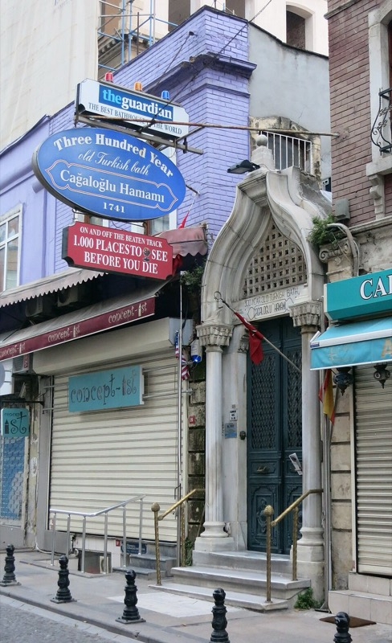
Cağaloğlu Hamamı, 1741
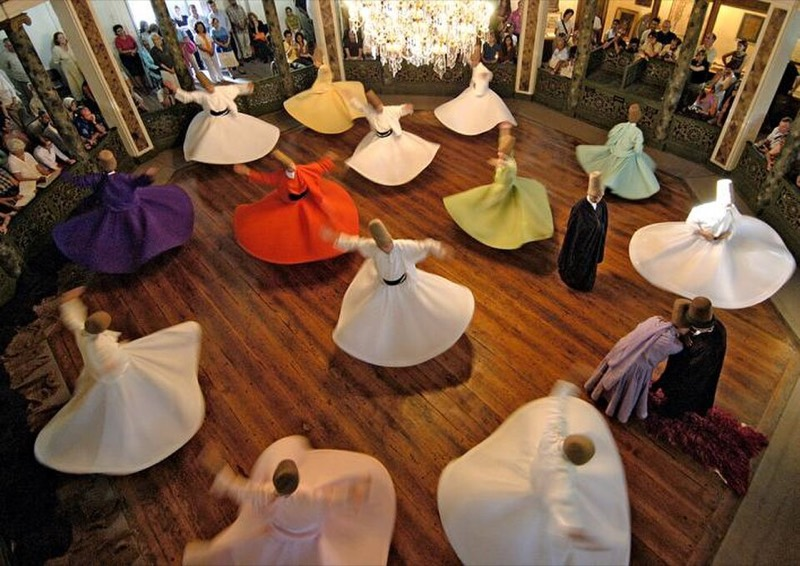
Дервишийн сема, зураг хориотой
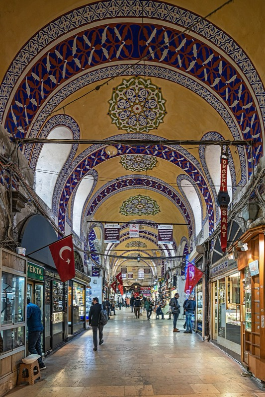
Их зах: эхний үнийн 50–60%
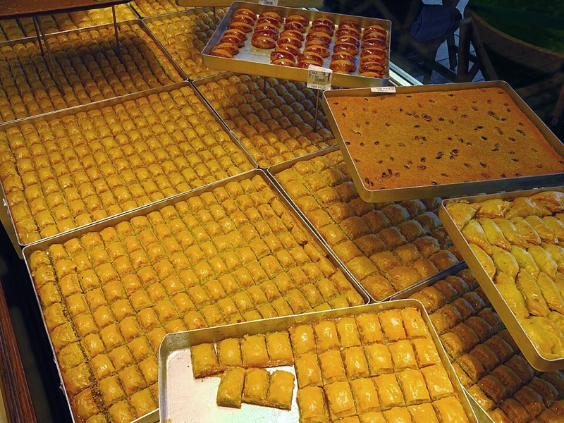
Баклава, кадайыф: Güllüoğlu, Hafız Mustafa
- Өнөөдөр захиалах: Balıkçı Sabahattin (Мя 19:30), Cağaloğlu хамам 8 хүн (Лх 18:00), Matbah (Лх 20:15), Hodjapasha дервиш (Пү 19:00), Hamdi (Пү 20:20), Karaköy Lokantası (Ба 19:30), Neolokal (Бя 19:30), Asmalı Cavit (Ня 19:30), нисэх буудлын ван (Да 13:00). Google Maps дээрх WhatsApp дугаараар захиалах нь энгийн; "8 kişi, saat 19:30, rezervasyon" гэж бич.
- Хамам: Cağaloğlu, Hürrem Sultan, Çemberlitaş бүгд эмэгтэйчүүдийн тусдаа хэсэгтэй, эмэгтэй масажчинтай. Kılıç Ali Paşa эмэгтэйчүүдэд зөвхөн 08:00–16:00. Peştemal (алчуур), шаахай өгдөг, дотуур хувцас эсвэл бикини доод хэсэг өмсдөг. Хамамын дараа гадаа хүйтэн тул үсээ хатааж, малгай.
- Сүмийн дүрэм: мөр, өвдөг халхалсан; алчуур; гутлаа тайлж уутанд хийнэ; мөргөлийн цагаас 30 мин өмнө, дараа жуулчин орохгүй (дээрх хүснэгт). Баасан 12:00–14:30 Ая София, Хөх сүм, Хора хаалттай.
- Аюулгүй байдал: Истанбул эмэгтэй бүлэгт аюулгүй хот. Султанахметад "гутал тослогч"-ийн унасан сойз, ресторан руу дуудагч, Таксимд бар руу урих "найрсаг" танихгүй хүн: бүгдээс татгалз. Таксид тоолуур шаард, BiTaksi хэрэглэ. Трам, гатлага онгоцонд цүнхээ урдаа.
- Хуваах: нийтийн касс, нэг хүн карт/такси/цай төлөөд Splitwise-д бичих. Ресторанд нэг hesap авч картаар хуваах нь энгийн. Цайны мөнгө ресторанд 5–10%, хамамд 10%, таксинд дугуйруулна.
- Утас: Google Maps (трам, автобус, гатлага онгоцны бодит цаг: "Transit"), Moovit, BiTaksi, İstanbulkart апп, Getir/Yemeksepeti (хоол хүргэлт буудал руу). Şehir Hatları хуваарь sehirhatlari.istanbul, Turyol turyol.com. Google Translate турк хэлний offline багц татаж ав.
- Цаг агаар солигдвол: борооны өдрийн дотор хөтөлбөрийг нарлаг өдрийн задгай хөтөлбөртэй солиход хялбар. Топкапы Мягмар, Долмабахче/Археологи/Neolokal Даваа, Их зах Ням, Хора Баасан хаалттай.
- Даваа: ачааг 13:00 хүртэл буудалд хадгалуулахаа урьдчилан хэлж, ванг Ням орой баталгаажуул. 18:30 нислэгт 15:30-аас өмнө бүртгэлд байх.
Холбоосын лавлах: сайт ба газрын зураг
Газар бүрийн албан ёсны сайт (цаг, үнэ, захиалга) ба Google Maps байршил. Хөтөлбөр дотор ч тод нэр бүр дээр дарж орно; 📍 нь газрын зураг.
Эх сурвалж
- Цаг агаар: Open-Meteo API, 2026.10.13-ны прогноз (41.01N, 28.98E)
- Мөргөлийн цаг: Диянет, Истанбул 2026.10
- Гатлага онгоцны хуваарь (2026.09.07–2027.06.27 өвлийн тариф): Эминөнү–Бүйүкада (Turyol), Кабаташ–Арлууд, Эминөнү–Кадыкөй, Босфорын тойрог
- Ханш: Wise USD/TRY, XE USD/MNT
- Дундаж зардал: Istanbul costs 2026, food prices 2026
- Тасалбар, цаг: Istanbul Tourist Pass, 2026.05, Entrance fees 2026, Топкапы, Хора, хамам, Hodjapasha, Neolokal цаг
- Тээвэр: TurkicPost 2026.07 тариф, Havaist / Султанахмет 2026, Балат руу автобус
- Ресторан: Каракөй, Кадыкөй, шилдэг ресторан
Зургийн эх сурвалж (Wikimedia Commons, чөлөөт лиценз)